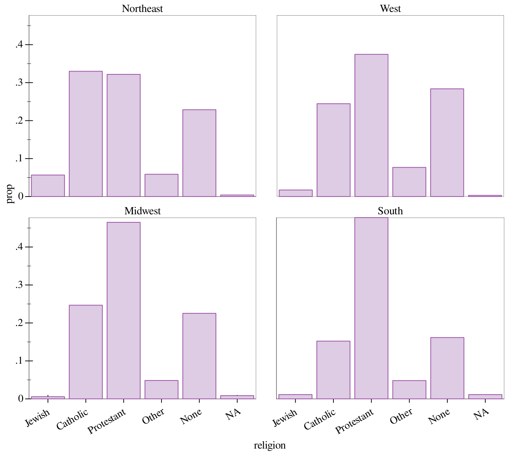
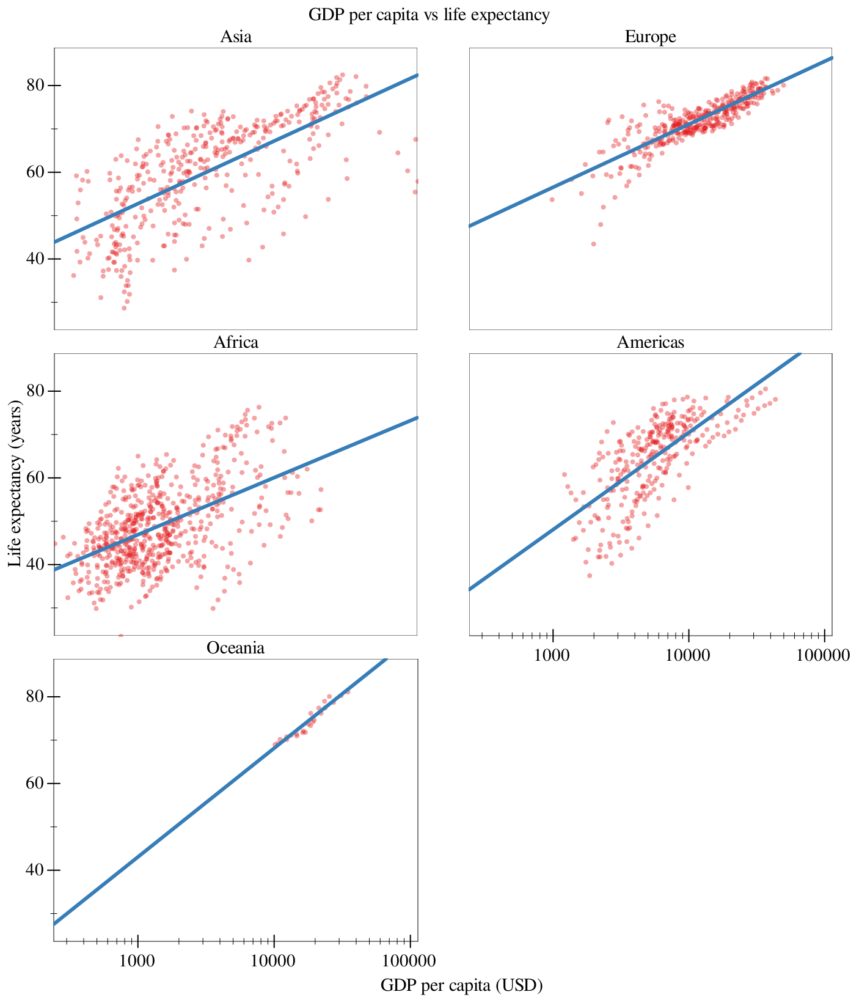
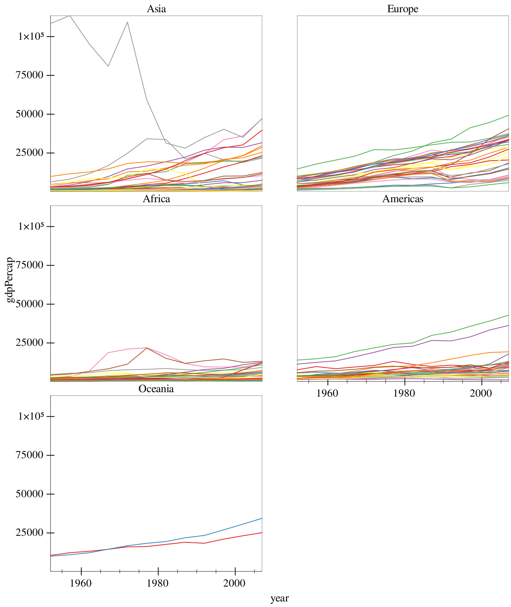
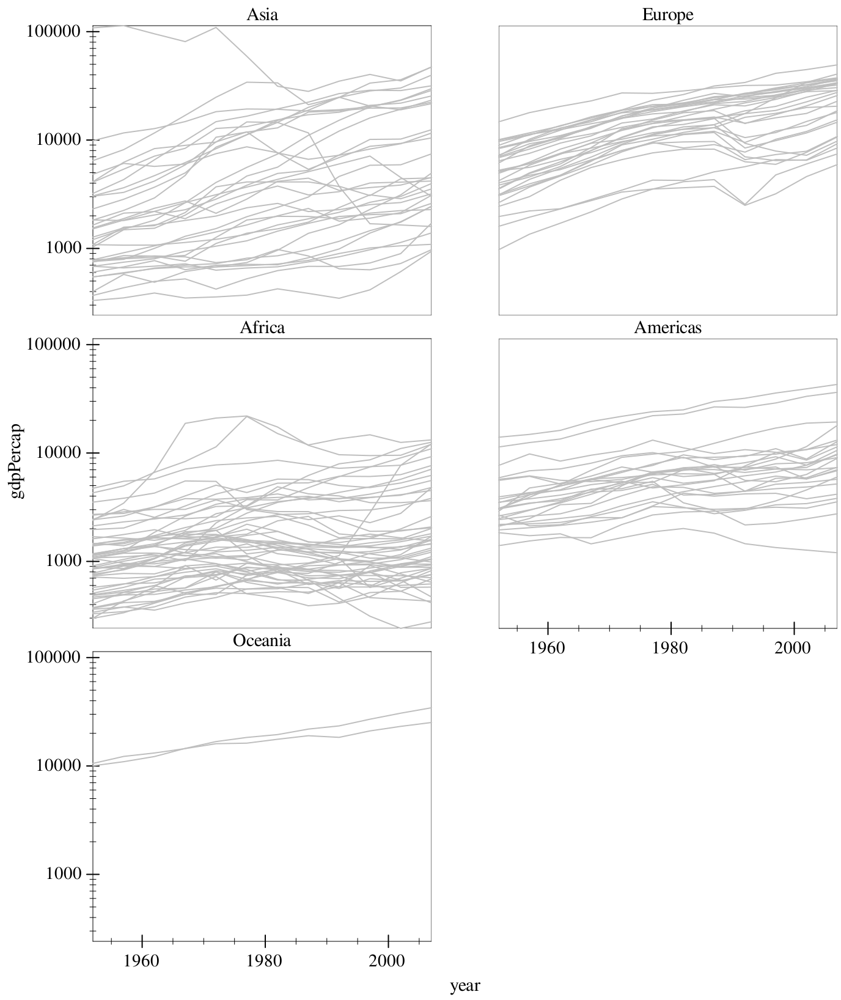
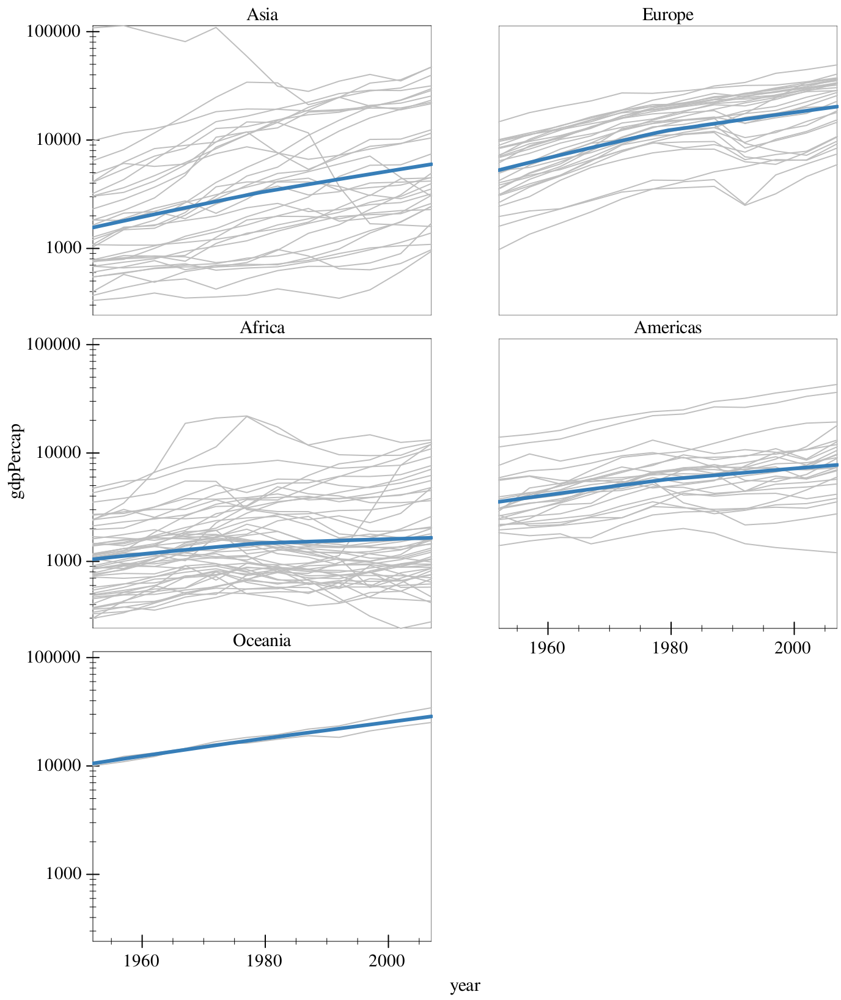

5 Faceting
In both the Gapminder and GSS examples, we ended with a whole bunch of information crammed into a single visualization. Let’s say we instead wanted to make things more clear. In this case, we can add a facet to our visualization, which creates multiple plots in different panels.
> (parameterize ([plot-x-tick-label-angle 30] [plot-x-tick-label-anchor 'top-right]) (graph #:data gss #:mapping (aes #:x "religion" #:facet "bigregion") #:width 700 #:height 700 (bar #:mode 'prop))) 
Now we’ve managed to split up our visualization into seperate charts for each region. In addition, this demonstrates that missing functionality in Graphite can be added with the regular plot parameters, in this case to rotate the labels.
> (graph #:data gapminder #:title "GDP per capita vs life expectancy" #:x-label "GDP per capita (USD)" #:y-label "Life expectancy (years)" #:mapping (aes #:x "gdpPercap" #:y "lifeExp" #:facet "continent") #:x-transform logarithmic-transform #:height 900 #:width 700 #:facet-wrap 2 (points #:alpha 0.4) (fit #:width 3)) 
The #:facet-wrap keyword argument determines how many columns the resulting facet will have (so, how many frames we have until we wrap). This is set to 2 for all the plots in this document, because of mobile.
Note that we have to pay attention to the variable we’re faceting on, and make sure that that variable makes sense to facet on. For example, if we were to facet on "country", we would get something close to 150 frames!
Whoa! So the problem here is that Graphite doesn’t know how to handle all the data it’s being fed. Namely, we have a bunch of different data-points split up by continent. This information is correct: but we haven’t handled it correctly with our renderers.
> (graph #:data gapminder #:mapping (aes #:x "year" #:y "gdpPercap" #:facet "continent") #:legend-anchor 'no-legend #:height 900 #:width 700 #:facet-wrap 2 (lines #:mapping (aes #:discrete-color "country"))) 
This is better, but we note that measurements in Asia are dwarfing that of poorer countries. To help offset this, we can add a log transform on the y-axis. Also, all these colors suck, so we override it with a global gray, but keep the coloring aesthetic so we retain our grouping.
> (graph #:data gapminder #:mapping (aes #:x "year" #:y "gdpPercap" #:facet "continent") #:y-transform logarithmic-transform #:legend-anchor 'no-legend #:height 900 #:width 700 #:facet-wrap 2 (lines #:color "gray" #:mapping (aes #:discrete-color "country"))) 
> (graph #:data gapminder #:mapping (aes #:x "year" #:y "gdpPercap" #:facet "continent") #:y-transform logarithmic-transform #:legend-anchor 'no-legend #:height 900 #:width 700 #:facet-wrap 2 (lines #:color "gray" #:mapping (aes #:discrete-color "country")) (fit #:width 3 #:method 'loess)) 
and there we have it!